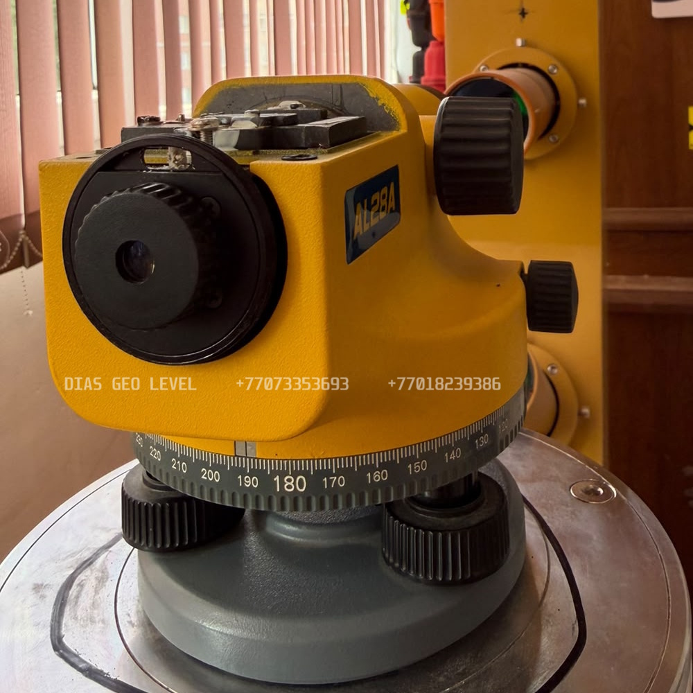
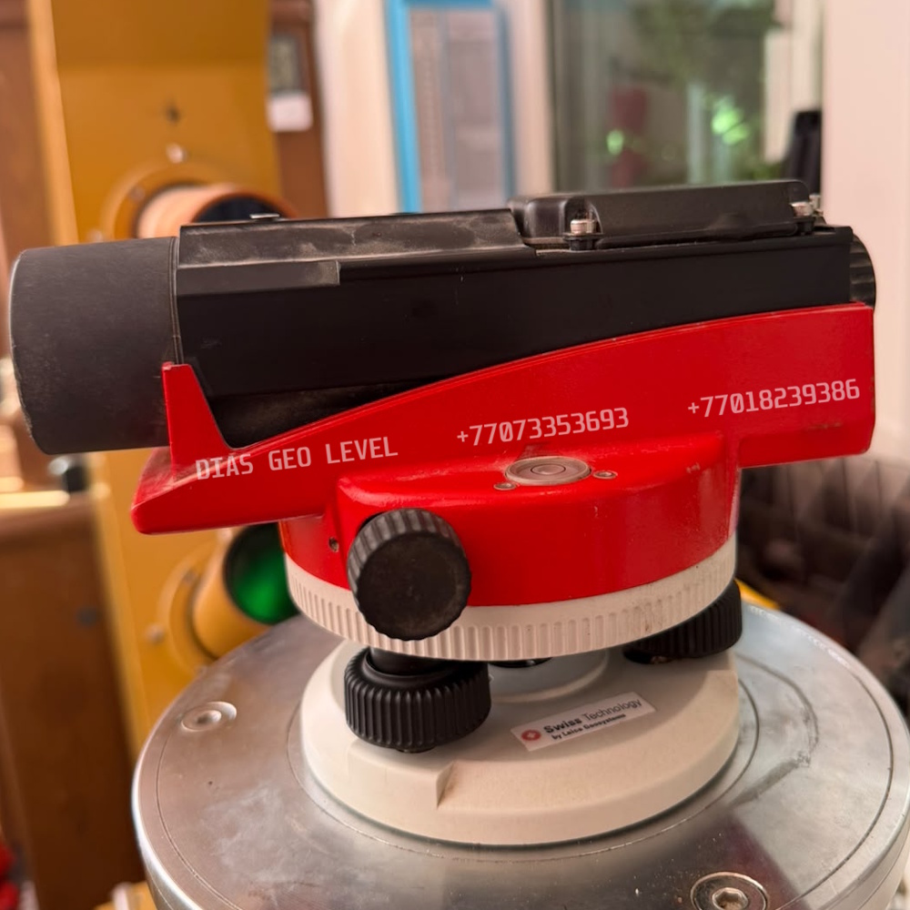

DIAS GEO LEVEL

Trimble

Leica

BOSCH
Поверка нивелиров в Астане • Калибровка нивелиров в Астане • Юстировка нивелиров в Астане • Настройка нивелиров в Астане • Ремонт нивелиров в Астане
Сертификат о метрологической поверке нивелира на 1 год
📞 Позвонить WhatsApp 📍 2ГИСПочему выбирают нас
- Гарантия на ремонт
- Бесплатная первичная диагностика нивелира.
- В наличии запасные части на нивелиры
- Работаем с утра до вечера, без выходных
Обслуживаем нивелиры всех известных производителей в Астане:
Leica NA320 • Leica NA324 • Leica NA332 • Leica NA520 • Leica NA524 • Leica NA532 • Leica NA720 • Leica NA724 • Leica NA728 • Leica NA730 • Leica NA730 Plus • Topcon AT-B4A • Topcon AT-B3A • Topcon AT-B2 • Trimble Spectra Precision AL20M • Trimble Spectra Precision AL24M • Trimble Spectra Precision AL28M • Trimble Spectra Precision AL28A • Trimble Spectra Precision AL32A • Sokkia • Nikon • Bosch • CONDTROL • SETL • CROWN • SOUTH • Геокурс • УОМЗ • RGK • Зубр и другие.